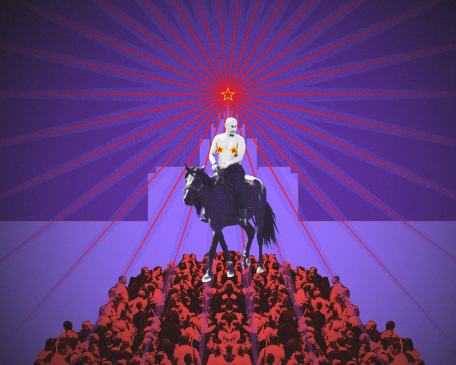
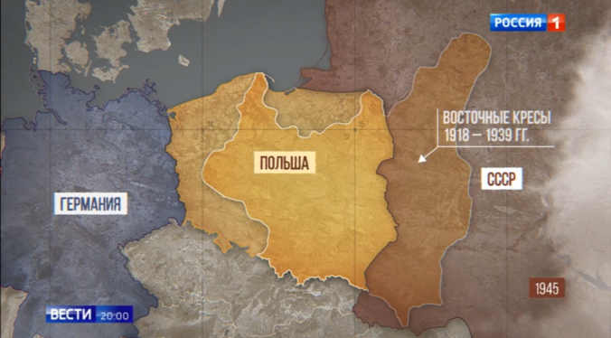

This Oko.press article is part of the series "GOVORIT MOSKVA for the New Year" © Oko.press 2022. Translated and posted with Publisher's permission. link to the original article (in Polish)

Copyright: collage: ©Hanna Szukalska/OKO.press; photo: ©AFP; Unsplashcollage: ©Hanna Szukalska
After 10 months of watching Putin's TV and reading Putin's messages, I asked myself: why are they so effective if they contain such nonsense? Thus I found the five pillars of Putin's propaganda.
PUTIN, Dear Readers, will spend the New Year with his loved ones, and watch his New Year's speech with them. (Its content was published by the Moscow media when the year 2023 arrived in Kamchatka, i.e. after 12:00 UTC.)
However long were I to sift through my notes of Putin's lies about the war in Ukraine, I wouldn't be able to find a better picture of Kremlin's propaganda:
The one who has never seen the front lines praises the bravery of the fighters! While telling reporters about watching himself on TV (at a press conference on December 22nd) Putin smirked.
The propaganda machine was not deceived however. The authority figure has the right to irony, but not the propaganda. So it produced stories about dignitaries of a lower rank, who will spend the New Year "...with their loved ones, listening to the president's message." They will not be drinking too much, but they will praise "our boys" at the front line.
Because Russia had no choice but to attack Ukraine. She was forced to do it. However, it has been successful: it has expanded its borders, and there are more citizens of the Russian Federation (as a result of the "annexation" of eastern Ukraine). Russia's economy is doing great, having shrunk by only 2.5 percent. And the public trusts their president.
According to the independent portal "Medusa", this is in accord with the Kremlin's directives: this is how everyone is supposed to talk about the war from now on.
By analysing Putin's message across the last 10 months, I concluded that this propaganda is based on five assumptions:
The Kremlin must have figured that there are enough people who share such an image of the world, that using these negative emotions would amplify the propaganda message.
Putin's entire narrative about the war, about aggression against Ukraine, and Russia's strategic goals, is based on a vision of violence: the strong one has the right to do what he wants.
Therefore, a country that cannot do what it wants is not sovereign. Sovereignty, understood as the possibility of unlimited violence, is an attribute of power, as is ostentatious wealth. It testifies to the right to violence. This is why the Kremlin's propaganda constantly emphasizes what wonderful cars, planes, watches, and palaces Putin has, and what wonderful red carpets they spread out in front of him; he also has new warships - he launched them this week. Remotely of course, over video links.
The violent story of the war in Ukraine goes like this: Russia was attacked by NATO in Ukraine, in order not to allow Her to do Her thing there. If Russia decided now that the bombing of Ukraine should be stopped, it would [effectively] lose its sovereignty. Negotiating, recognizing other points of view, is a sign of weakness.
"Russia has never accepted someone else's conditions" said Putin's spokesman Peskov on December 26th. Historically, this is not true, but we are dealing here with a confession of faith of an abuser. Putin was juggling the word "sovereignty" in his New Year's address on December 31st.
There is no such thing as human rights. Any authority has the right to set for itself such values as it pleases. Currently, China has the best values - because it is the strongest. The West, on the other hand, is weak because it gives power to women, and women are inherently weaker. (It is worth noting that the Russian propaganda message is extremely misogynistic - a woman at the head of the Ministry of Defense is, hehehehe, an ostentatious show of weakness).
And since violence is normal, the only sensible strategy for the common man is to join the chase of the stronger after the weaker.
Here are a few examples from the propaganda message:
Kremlin's propaganda fervently believes in the power of the fear of humiliation. A man experiencing violence will do everything not to experience also ridicule, in addition to simple force. Humiliation is a punishment for the wrong choice, and mistaken—because not the same as the majority's—self-identification.
In every television "Vesti" [News program] there is something about non-heteronormative sex. How is this possible? – you will ask. After all, promoting “non-traditional relationships” in Russia is severely punished.
Yes it is possible. Let's take a look at this lecture on what is traditional and legal in Russia, and what is not. This is from a completely serious report, prepared by RIA Novosti, from the meeting of the Duma committee on November 21 [in Russian] regarding the tightening of penalties for "promoting LGBT":
"It is legal to talk about LGBT people, including on TV, if the material does not create a positive image of non-traditional relationships. It all depends on the context. In other words, if a beautiful image of an LGBT relationship appears on the screen, it will be punished. But if it is shown in such a way that it will not be able to evoke positive emotions in the viewer, and it is accompanied by appropriate explanations, it will not be considered LGBT propaganda."
The state calmly institutionalizes violence and humiliation. For the wronged and humiliated, the power points at others, who are even lower in the hierarchy, and thus allows them to feel better. Such is the defense of “traditional values.”
Here's the usual bit about how low the West has fallen:
Propaganda exploits distrust and inability to cooperate. This can be clearly seen, for example, in the attacks on the European Union. The Kremlin says there is no such thing as the EU. Stories about meetings, negotiating positions, jointly inventing solutions - are fairy tales for the naive.
Anyway, who manipulates whom is unimportant. What counts is the belief that cooperation, compromises, conversation, lead to nothing. If the UK is negotiating with the US, it means that it "has become a colony of its former colony."
Propaganda always refers to unity, understood as joining the ranks. There is no debate. Twitter link, in Russian
Equally interesting—in terms of inducing distrust of cooperation—are propaganda stories about how law is made in Russia. Propaganda reports: "Putin ordered that..." This is how the most powerful individual knows, of his own self, what to do. The rest don't know, so they keep reverently silent. There are no consultations or negotiations here. Except perhaps humble petitions to the throne.
As for the fact that Putin has to issue orders over and over again (to change what he ordered previously, because the order didn't go into all the detail?) That is a complete trifle. The measure of a state's efficiency is not its effectiveness and meeting the needs of citizens, but unity, subordination, and lack of criticism.
This is a very frequently exploited thread of Kremlin's propaganda. Analysts in Europe often emphasize that it uses the same channels of communication as the anti-vaxxers. However, there is nothing strange about it. Dislike of learning [is] a result of painful memories of school, which required memorizing formulas, not asking questions or experimenting. [This] is a fantastic fuel for disinformation and propaganda.
Thanks to this, we have tales about:
These threads appear in the propaganda less often than the attacks on LGBT people, but really regularly. And because the Kremlin's propaganda machine has multiple layers, Kirillov's press conference in turn infects the messages of publicists and local media. Twitter And then it spreads around the Web in the version "my good friend has a friend who..."
And then [it goes viral.] Twitter
For Putin and his audience, history is "the facts." During his speeches, Putin can perfectly impersonate a victim of school history quizzes:
Because history—same as exact sciences—is one big hoax invented to torment the simple man. But a cunning and wise man will find out, discover the "historical truth" and "facts" that will give him the right to do what he wants.

Putin's full-scale "fact:" Not everyone may know it, but Poland's borders have changed after World War II. What follows from this, "obvious obviousness" for Putin and his propaganda, is that Poland wants to regain eastern territories. ("Vesti", August 17th, 2022)
One can happily laugh at this and ask whether, according to Putin, London today belongs to Italy – since it was founded by the Romans. Does Kaliningrad belong to the Czechs, because the city was founded by their king in the 13th century? [This] propaganda appeals to the experience of people who have never treated history as a conversation about the present. They did not learn to analyze sources. Instead, they learned that you can gain an advantage over your opponent, by referring to a "historical fact" unknown to him.
In this fairy tale, Russia was always a peace-lover. Unfortunately, it was being attacked. ("The basic reason for the Special Operation was USA and NATO's reluctance to take Russia's worries into account.") Such "history" teaches you that you are always right, as long as you stand with the authorities. Then your "facts" will be above other people's.
The five elements of Russian propaganda can be used to make a simple story justifying the attack on Ukraine: it is a weak country, accepting LGBT, betraying Russia with its eternal enemies, brazenly resisting Putin's power, having no historical roots, and spreading the most terrible diseases in the world.
Therefore [because of historical past of the same totalitarian regime,] it should not come as a surprise that the same ideas about society are also used in Poland to oppress "the enemy." Among others, government "Für Deutschland" television and [Law and Justice Party] Chairman Kaczyński do it. They [simply] understand how effective these techniques are:
Yes, these are all elements of the same model. Perhaps it does not apply to the entire Polish society, but the Law and Justice Chairman believes that it will be enough to socially energize his supporters.
Firstly, this propaganda narrative reaches everywhere where social relations are the same as in the model used by the propaganda.
The second conclusion – good education is as important in defense against Putin as cannons.
Historian by education. From 1989, for 22 years, an editor at Gazeta Wyborcza, then for 10 years a clerk, e.g. in the Office of the Commissioner for Human Rights of Adam Bodnar. From 2021 at OKO.press
{kind=link}
{kind=link}